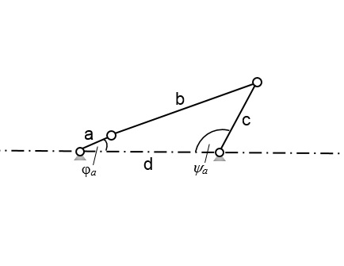

Skizzieren Sie die Kurbelschwinge mit dem momentanen Kurbelwinkel φa=30°
Ermitteln Sie nun zum Vergleich eine zentrische Kurbelschwinge unter Beibehaltung von a,b und ψ0. Bestimmen Sie hierfür:
die Gliedlänge c
die Gliedlänge d
den Übertragungswinkel
Lösung:
1. Der Differenzwinkel α
Im Aufgabenteil 1. beziehen wir uns auf die Gleichung (A.6) für den Differenzwinkel α aus der Formelsammlung. Da wir das Zeitverhältnis für den Hin- und Rücklauf schon gegeben haben, können wir es auch direkt einsetzen.
Somit ergibt sich:
α=180°tH+tRtH−tR=12°(A.6)
2. Die Gliedlänge b
Auf die Gliedlänge b kommt man durch die geometrischen Zusammenhänge der Kurbelschwinge. Wenn man die Gleichung (A.9) aus der Formelsammlung nach b umstellt, kann man diese bestimmen.
b=sin22αc2sin22ψ0−a2cos22α=449,66mm(A.9)
3. Die Gliedlänge d
Um die letzte Gliedlänge bestimmen zu können, wenden wir die Formel (A.10) aus der Formelsammlung an. Diese wird nach d umgestellt und man erhält:
Für Steglagen und Übertragungswinkel verwendet man in diesem Fall die Formel (A.11) aus der Formelsammlung.
cosμa,i=2bcb2+c2−(d±a)2(A.11)
Der innere und somit auch der minimale Übertragungswinkel μi wird berechnet, indem man diese Formel nach μi umstellt und in der Klammer die Gliedlänge d von a subtrahiert.
Somit ergibt sich:
μi=cos−12bcb2+c2−(d−a)2=38,34°(A.11)
5. Skizze der Kurbelschwinge mit dem momentanen Kurbelwinkel φa=30°
Um die Kurbelschwinge zu skizzieren benötigen wir noch den Schwingwinkel ψa. Dieser wird wie folgt berechnet:
ψa=cos−12cdc2+d2−(b+a)2=118,67°(A.2)

Kurbelschwinge
6. die Gliedlänge c
Für eine zentrische Kurbelschwinge gelten die Formeln A.12 aus der Formelsammlung. Da diese keine Exzentrizität (e=0), jedoch die gleichen Kurbelwinkel für Hin- und Rücklauf (φ0=π) hat, gilt nun folgende Beziehung für die Gliedlänge c:
c=sin2ψ0a=200mm(A.12)
7. die Gliedlänge d
Da die Beziehung der Gliedlängen für eine zentrische Kurbelschwinge folgerdermaßen lautet:
b2−a2=d2−c2(A.12)
können wir diese Formel nach unserer gesuchten Gliedlänge d umstellen und erhalten dann:
d=b2+c2−a2=481,87mm(A.12)
8. den Übertragungswinkel
Für den Übertragungswinkel nehmen wir hierfür auch die letzte Formel der Dreien von A.12 und stellen diese nach μ um: